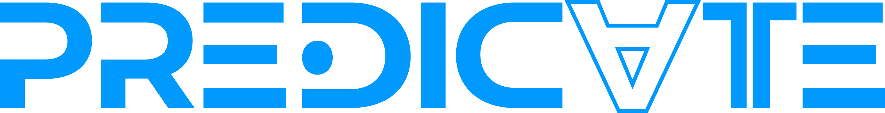
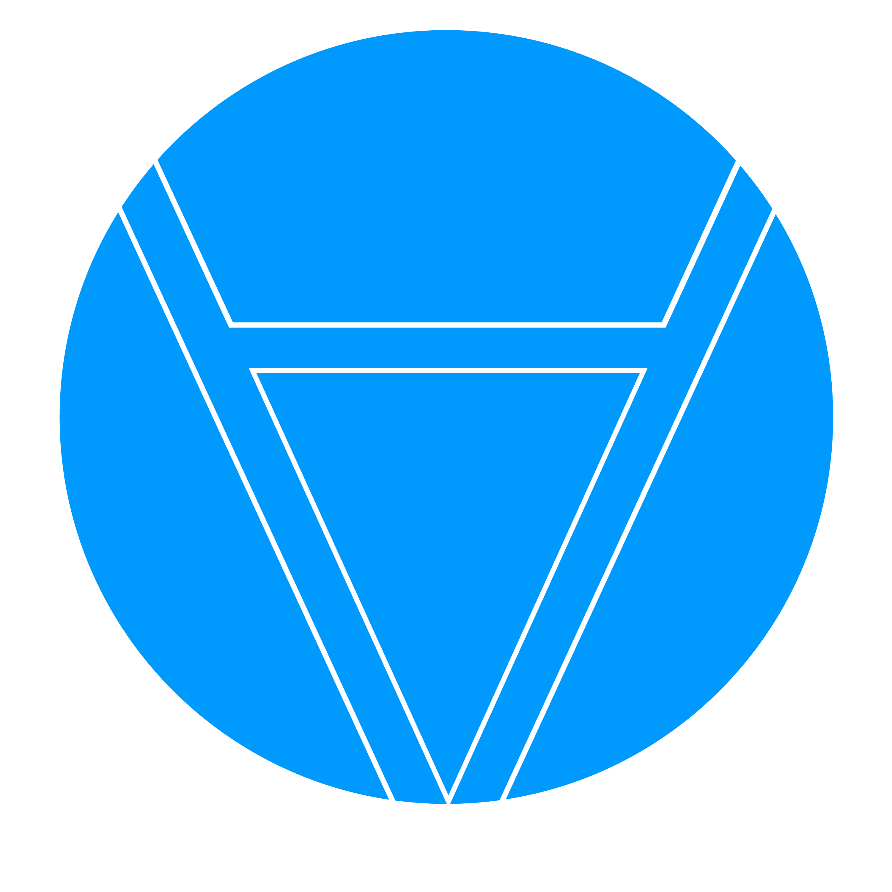
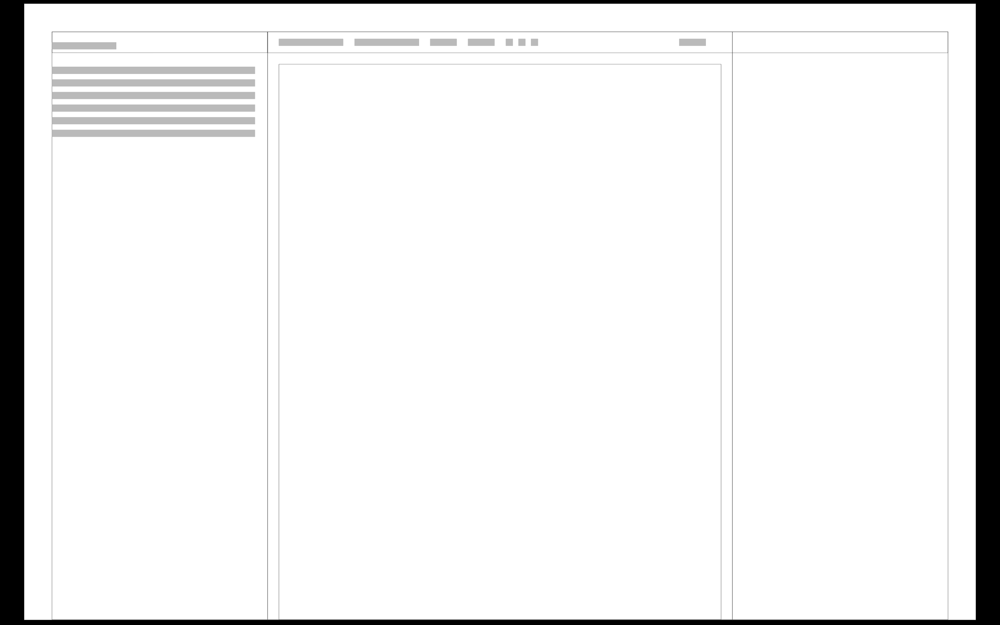
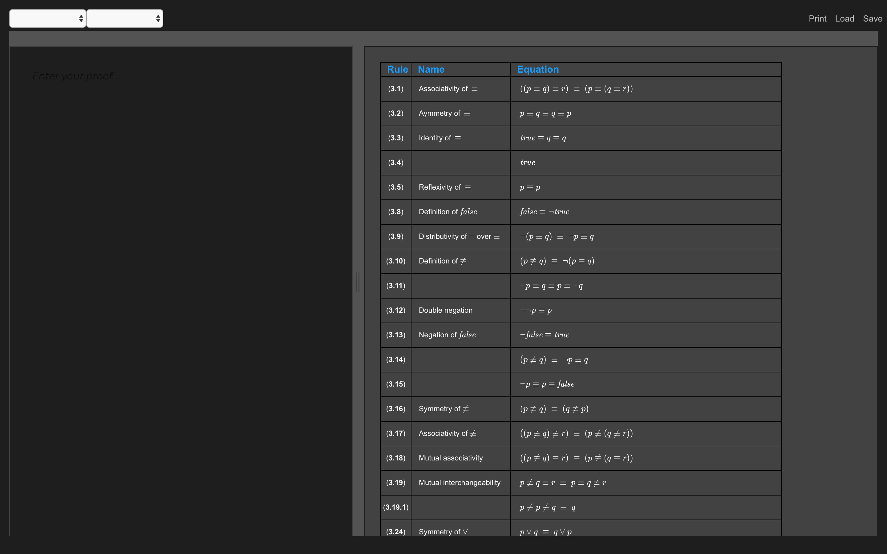

When someone asks me to work with a good team, I often say yes even if I am not 100% qualified. That was the case with this formal methods editor. A friend asked me to help with the front end development for this project which was to create an application that allowed students to input complex formal methods equations digitally so that graders didn't need to decipher the handwriting. I had done a bit of HTML and CSS (as you can see from this portfolio site), but wasn't sure if I was really capable of completing it. Below you will see what we created.




This project emerged from a real educational need: formal methods students were submitting handwritten assignments that were difficult for graders to read and evaluate. Our solution was to create a digital editor that would allow students to input complex mathematical equations and logical expressions using a clean, intuitive interface.
The logo was based off of the predicate symbol in formal methods, creating an immediate visual connection to the application's purpose. The logotype used other symbols found in the editor as well as my own creative system to make additional symbols, ensuring a cohesive visual language throughout the application.
Starting with wireframes, I mapped out the user flow and interface structure. The challenge was making complex mathematical notation accessible through a digital interface while maintaining readability and ease of use. The final design balanced functionality with aesthetics, creating a tool that was both powerful and pleasant to use.